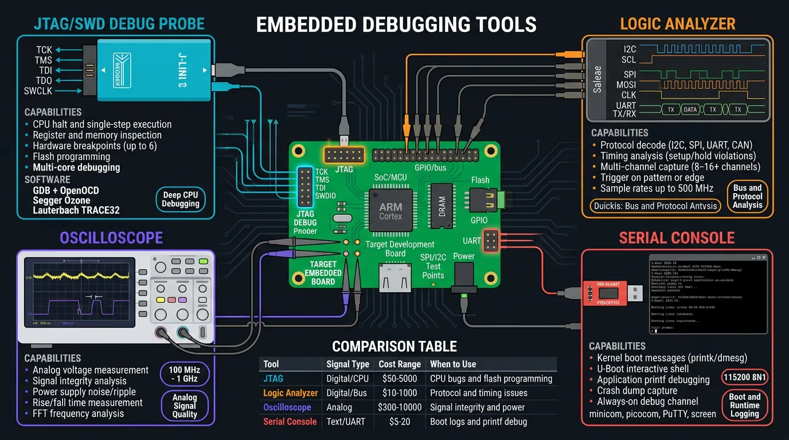
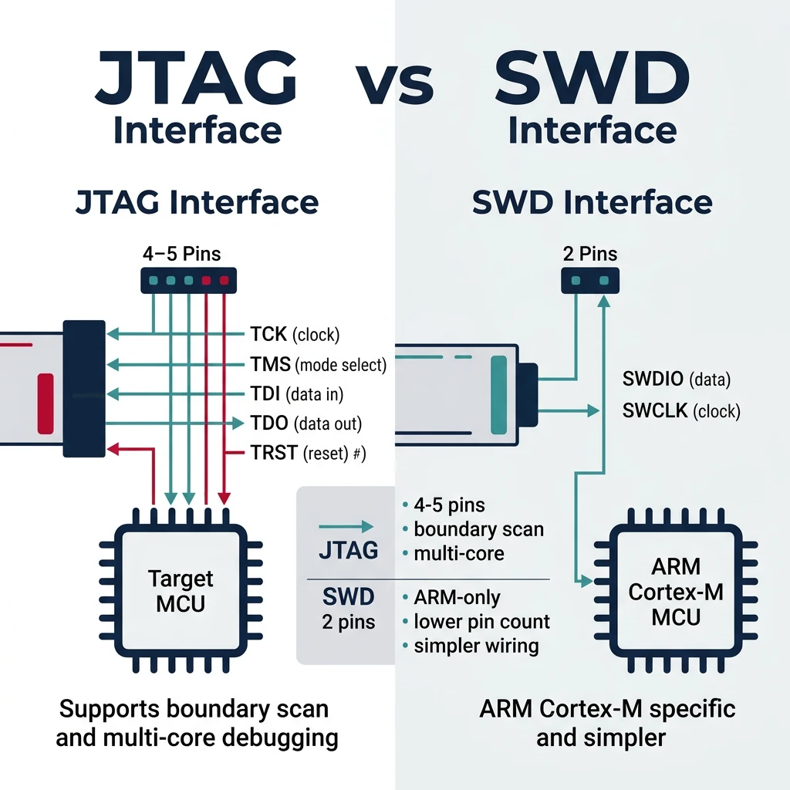
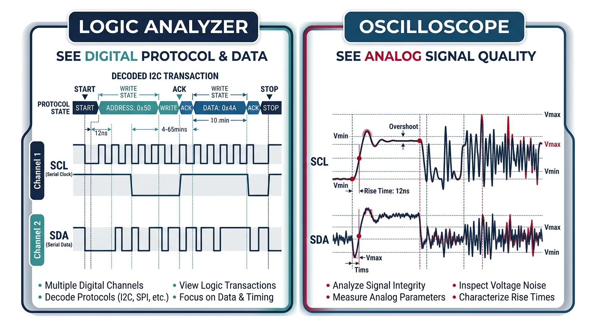
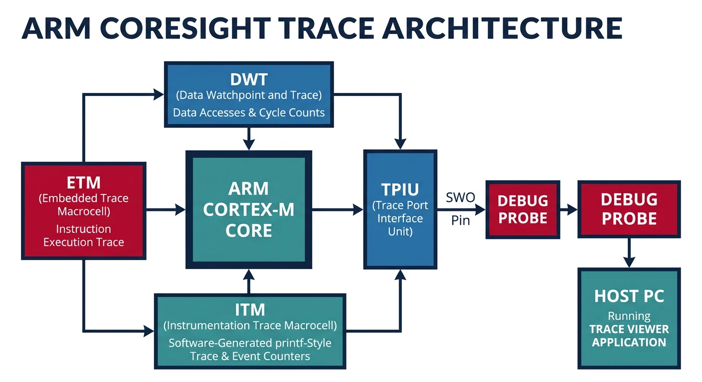
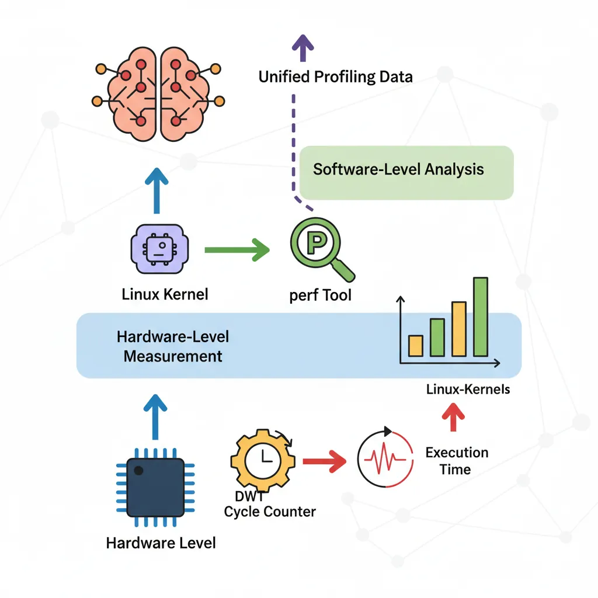

Introduction to Embedded Debugging
Embedded Systems Mastery
Fundamentals & Architecture
Microcontrollers, memory, interruptsSTM32 & ARM Cortex-M Development
ARM architecture, peripherals, HALRTOS Fundamentals (FreeRTOS/Zephyr)
Task management, scheduling, synchronizationCommunication Protocols Deep Dive
UART, SPI, I2C, CAN, USBEmbedded Linux Fundamentals
Linux kernel, userspace, filesystemU-Boot Bootloader Mastery
Boot process, configuration, customizationLinux Device Drivers
Character, platform, network driversLinux Kernel Customization
Configuration, modules, debuggingAndroid System Architecture
AOSP layers, services, BinderAndroid HAL & Native Development
HIDL, AIDL, NDK, JNIAndroid BSP & Kernel
BSP development, kernel integrationDebugging & Optimization
JTAG, GDB, profiling, optimizationAUTOSAR & EB Tresos
AUTOSAR architecture, MCAL, MPU protectionDebugging embedded systems requires specialized tools—JTAG probes, logic analyzers, and hardware debuggers. Unlike desktop development, you're often debugging without a display or keyboard.

JTAG & SWD Debugging
JTAG vs SWD
- JTAG: 4-5 pins (TCK, TMS, TDI, TDO, TRST), boundary scan, multi-core
- SWD: 2 pins (SWDIO, SWCLK), ARM Cortex-M specific, simpler

# Popular debug probes
# J-Link (Segger) - Most common professional probe
# ST-Link - Bundled with STM32 dev boards
# CMSIS-DAP - Open standard
# OpenOCD - Open On-Chip Debugger
openocd -f interface/stlink.cfg -f target/stm32f4x.cfg
# OpenOCD commands
> reset halt # Stop CPU
> flash write_image firmware.elf
> resume # Continue execution
> reg # Show registers
> mdw 0x40000000 10 # Memory dump (10 words)
GDB for Embedded Systems
# Connect to OpenOCD
arm-none-eabi-gdb firmware.elf
(gdb) target remote localhost:3333
(gdb) monitor reset halt
(gdb) load # Flash firmware
# Debugging commands
(gdb) break main # Set breakpoint
(gdb) continue # Run
(gdb) next # Step over
(gdb) step # Step into
(gdb) print variable # Inspect variable
(gdb) info registers # Show registers
(gdb) x/10xw 0x20000000 # Examine memory
# Watchpoints (trigger on memory access)
(gdb) watch my_variable # Break on write
(gdb) rwatch my_variable # Break on read
(gdb) awatch my_variable # Break on access
Logic Analyzers & Oscilloscopes
- Logic Analyzer: Digital signals, protocol decode (SPI, I2C, UART)
- Oscilloscope: Analog signals, timing, signal integrity, power rails

# Protocol analysis with sigrok
sigrok-cli -d fx2lafw -c samplerate=1M -o capture.sr
# Decode I2C
sigrok-cli -i capture.sr -P i2c:scl=D0:sda=D1
# Decode SPI
sigrok-cli -i capture.sr -P spi:clk=D0:mosi=D1:miso=D2:cs=D3
Trace Analysis (ETM/ITM)
ETM (Embedded Trace Macrocell) provides non-intrusive instruction tracing; ITM (Instrumentation Trace Macrocell) provides printf-style debugging via SWO pin.

// ITM printf via SWO (ARM Cortex-M)
#include "core_cm4.h"
int _write(int file, char *ptr, int len) {
for (int i = 0; i < len; i++) {
ITM_SendChar(*ptr++);
}
return len;
}
// Usage
printf("Debug: value = %d\n", value);
Memory Debugging
// Stack overflow detection (FreeRTOS)
#define configCHECK_FOR_STACK_OVERFLOW 2
void vApplicationStackOverflowHook(TaskHandle_t xTask,
char *pcTaskName) {
printf("Stack overflow in: %s\n", pcTaskName);
while(1);
}
// Heap usage tracking
size_t xPortGetFreeHeapSize(void); // Current free
size_t xPortGetMinimumEverFreeHeapSize(void); // Minimum ever
// Memory corruption detection
// Use canary values at memory boundaries
#define CANARY 0xDEADBEEF
Profiling & Performance Analysis

// DWT cycle counter (ARM Cortex-M)
CoreDebug->DEMCR |= CoreDebug_DEMCR_TRCENA_Msk;
DWT->CYCCNT = 0;
DWT->CTRL |= DWT_CTRL_CYCCNTENA_Msk;
// Measure cycles
uint32_t start = DWT->CYCCNT;
my_function();
uint32_t cycles = DWT->CYCCNT - start;
float us = cycles / (SystemCoreClock / 1000000.0f);
# Linux perf (embedded Linux)
perf stat ./my_program
perf record -g ./my_program
perf report
# ftrace for kernel
echo function_graph > /sys/kernel/debug/tracing/current_tracer
cat /sys/kernel/debug/tracing/trace
Power Optimization
// Low power modes (STM32)
HAL_PWR_EnterSLEEPMode(PWR_MAINREGULATOR_ON, PWR_SLEEPENTRY_WFI);
HAL_PWR_EnterSTOPMode(PWR_LOWPOWERREGULATOR_ON, PWR_STOPENTRY_WFI);
HAL_PWR_EnterSTANDBYMode();
// Clock gating - disable unused peripherals
__HAL_RCC_GPIOB_CLK_DISABLE();
__HAL_RCC_USART2_CLK_DISABLE();
// Reduce clock speed when idle
SystemClock_Config_8MHz(); // Low speed
SystemClock_Config_168MHz(); // Full speed when needed
- Use sleep modes aggressively (WFI/WFE)
- Disable unused peripherals and clocks
- Reduce CPU frequency when possible
- Use DMA instead of CPU polling
- Optimize interrupt handlers (keep short)
Code Size & Speed Optimization
# Compiler optimization flags
-Os # Optimize for size
-O2 # Optimize for speed
-O3 # Aggressive speed (larger code)
-flto # Link-time optimization
# Size analysis
arm-none-eabi-size firmware.elf
arm-none-eabi-nm --size-sort firmware.elf | tail -20
# Linker garbage collection
-ffunction-sections -fdata-sections
-Wl,--gc-sections
Conclusion & Series Summary
With debugging and optimization mastered, you're ready to tackle the automotive software standard. In the next and final part, we explore AUTOSAR architecture—the industry framework powering modern vehicle ECU software.
- MCU fundamentals, architectures, memory
- ARM Cortex-M and STM32 development
- RTOS (FreeRTOS, Zephyr) task management
- Communication protocols (UART, SPI, I2C, CAN, USB)
- Embedded Linux, U-Boot, device drivers
- Linux kernel customization
- Android system architecture, HAL, BSP
- Debugging and optimization techniques
Next in the Series
In Part 13: AUTOSAR Architecture & EB Tresos, we explore the automotive software standard—Classic & Adaptive platforms, EB Tresos configuration, MCAL drivers, MPU memory protection, and ISO 26262 functional safety.